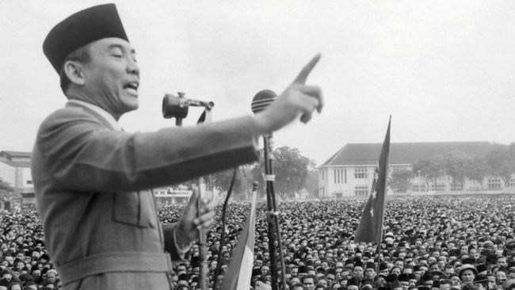
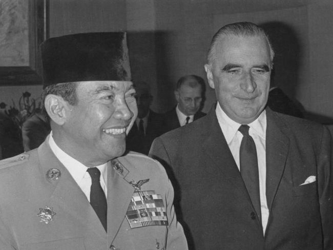
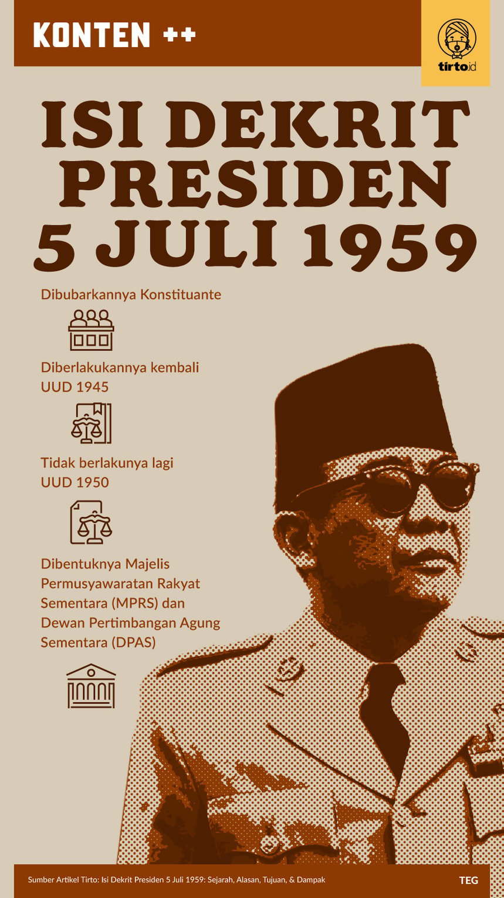

Demokrasi Terpimpin
(1959-1966)

Jakarta - Antara tahun 1959 hingga 1966, masa yang dikenal sebagai Demokrasi Terpimpin (Guided Democracy) telah terjadi.
Rentang waktu ini berlangsung dari 5 Juli 1959 hingga 11 Maret 1966.
Demokrasi Terpimpin dimulai dengan dikeluarkannya Dekrit Presiden pada 5 Juli 1959. Keputusan Presiden ini diambil setelah
Konstituante tidak mampu menyelesaikan tugasnya untuk merumuskan undang-undang dasar tetap, yang dianggap tidak menguntungkan
bagi perkembangan ketatanegaraan. Hal ini diambil dari kutipan buku "Pendidikan Kewarganegaraan untuk Kelas VIII SMP/MTs"
karya Aim Abdulkarim.
Penyimpangan pada masa Demokrasi Terpimpin (1959-1966) melibatkan beberapa aspek:
|
 Masa demokrasi terpimpin terjadi pada era pemerintahan Presiden Soekarno Foto:Keystone/Hulton Archive/Getty Images |
|
|
|
Dekrit Presiden pada 5 Juli 1959 disambut baik oleh rakyat dan didukung oleh TNI AD. Dekrit Presiden juga dibenarkan oleh
Mahkamah Agung dan DPR yang bersedia bekerja terus dalam rangka menegakkan UUD 1945. Pada periode ini, pemerintah Indonesia
menganut sistem Demokrasi terpimpin. Dekrit Presiden berisi ketentuan pokok sebagai berikut:
|
 |